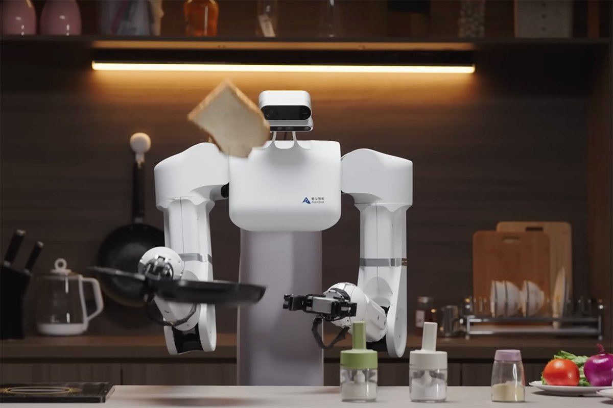
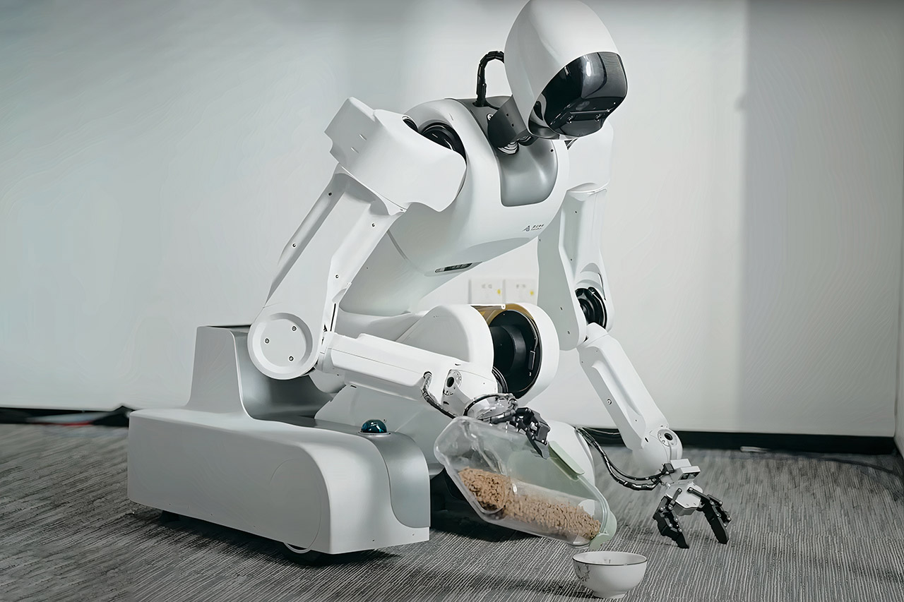
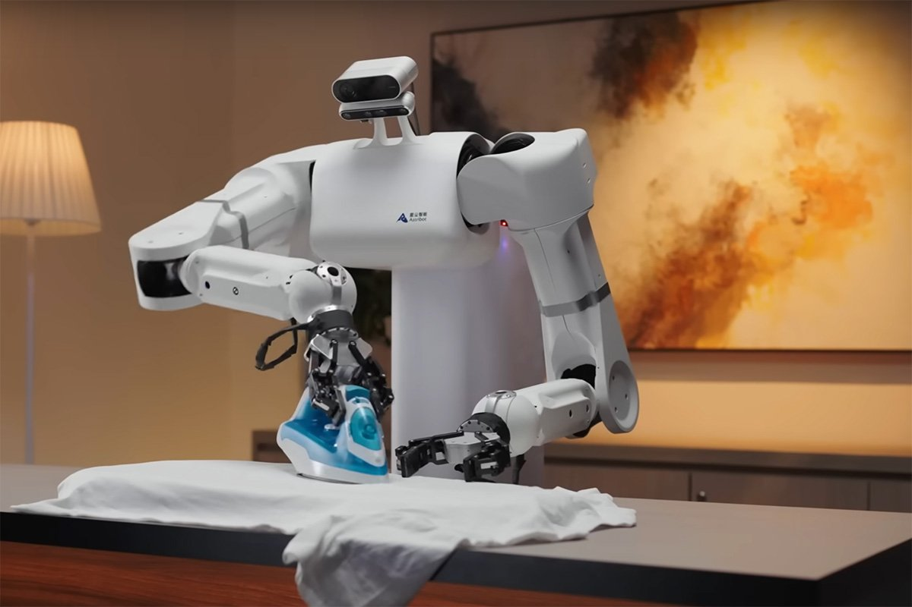
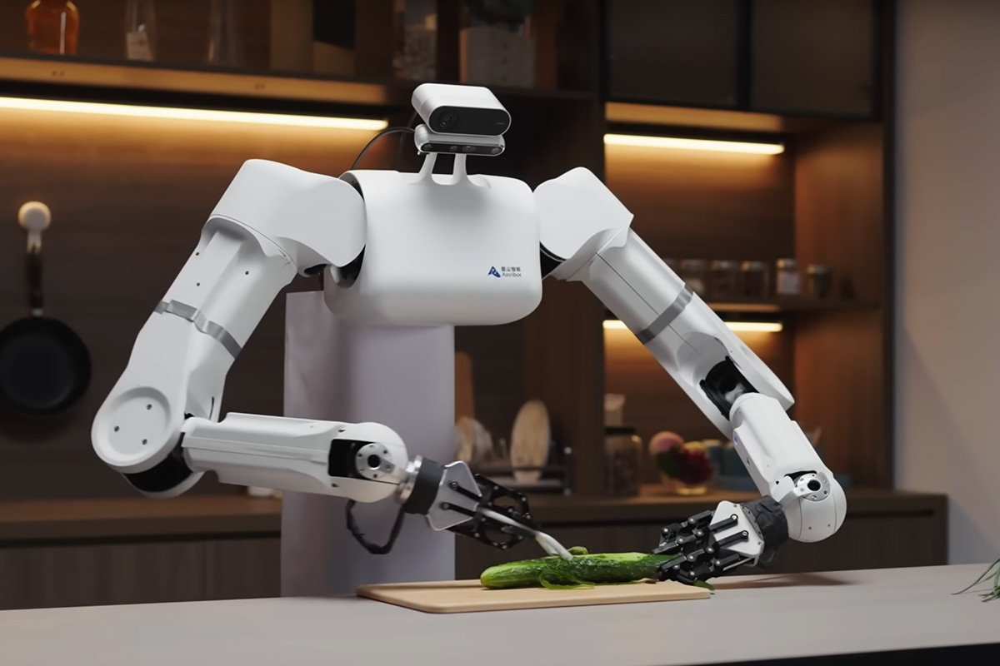
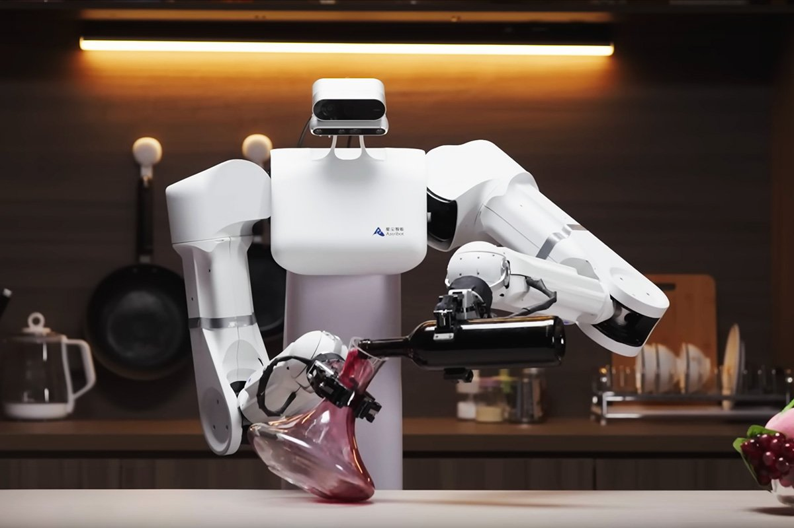
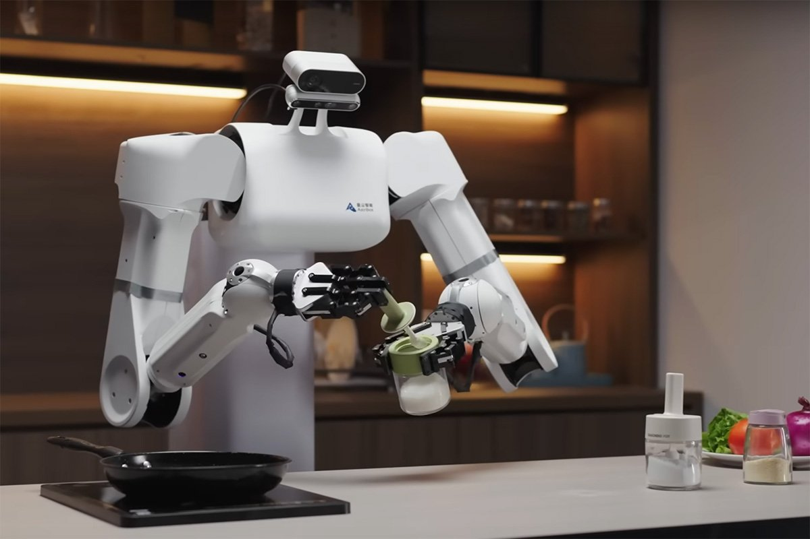
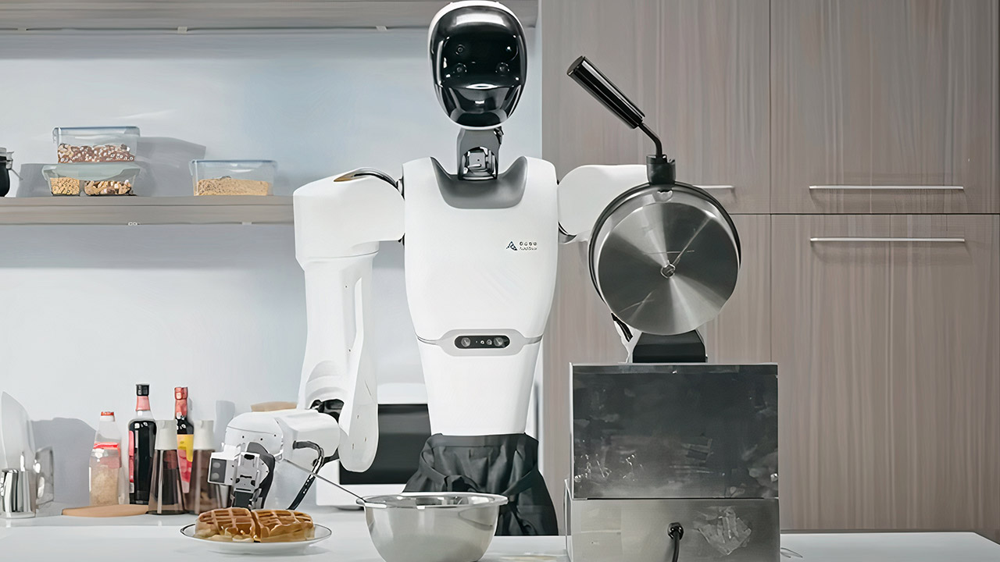
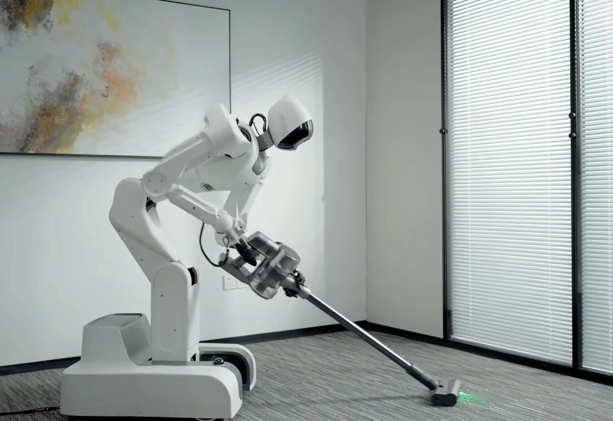

Your cooking assistant

SapienBot feeding system

Irons your laundry for you

Meal preparation is now SapienBot's job

SapienBot serves you drinks makes

SapienBot seasoning systemYou feel like you're in a restaurant

Now it's SapienBot's job to prepare desserts

Helper in house cleaning